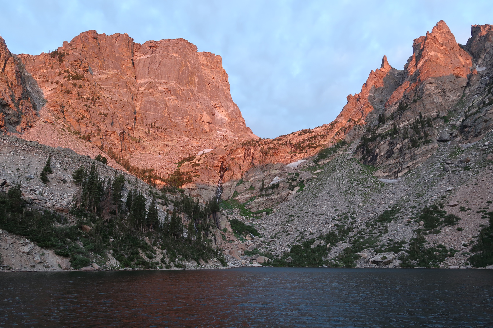

Welcome to Be Creative Development
I’m thrilled to invite you to explore my work, skills and professional experience, and get to know a bit more about me. It’s my firm belief that a good challenge is a great way to develop and improve, which is why I make a point of seeking out challenges in the professional realm as well as in my personal life. Take a moment to look around, and contact me directly to learn more.
